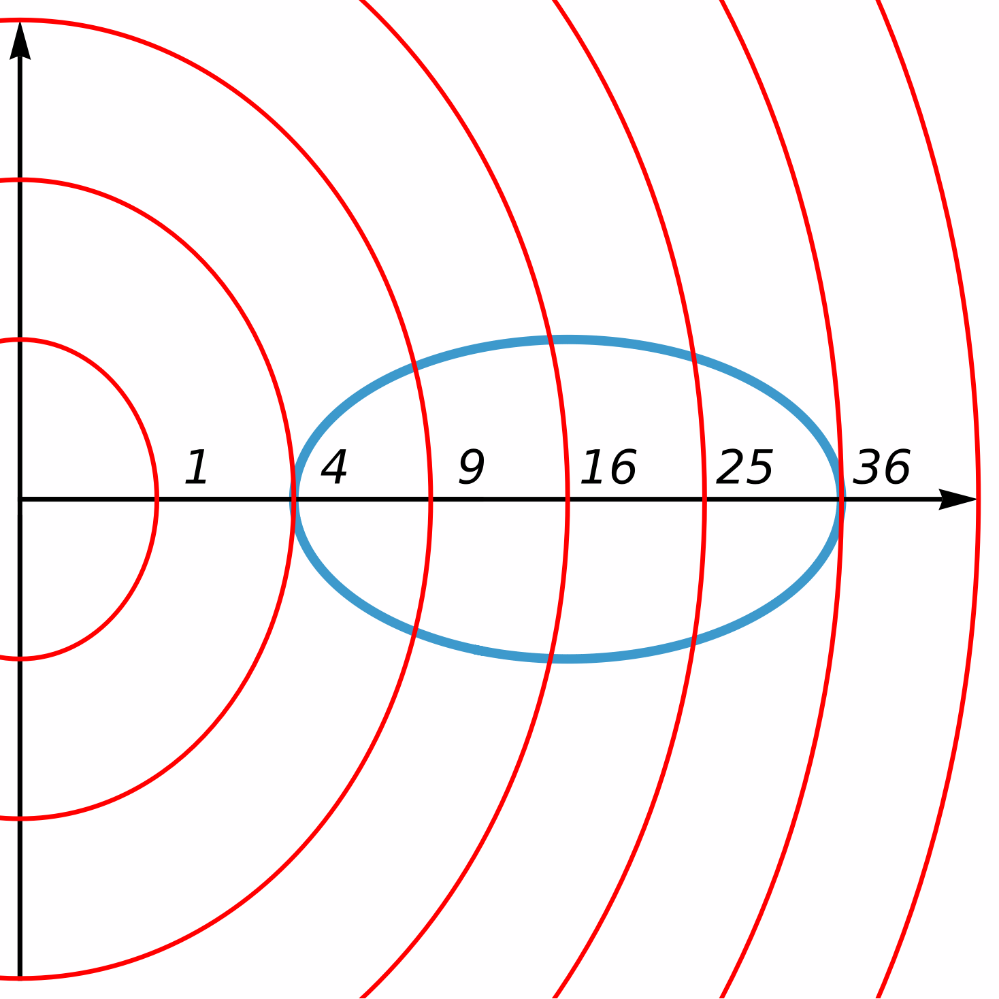

The Method of Lagrange Multipliers
In this section we present the method of Lagrange multipliers to solve optimization problems with constraints. This means that we will be given a function, say $f(x,y)$, and we will be interested in finding its extreme values under constraints of the form $g(x,y)=k$
Lagrange Multipliers with One Constraint
To motivate the method, let us start with a simple geometric problem.
Recall that the distance of a point $(x,y)$ to $(0,0)$ is simply $\sqrt{x^2+y^2}$. Since the square root is an increasing function, we can view the original problem as:
If we draw the ellipse, the answer to this question is clear: the closest point is $(2,0)$ and the farthest point is $(6,0)$. However, let us still try to get an intuition on how we could have detected them.
On the right we have drawn the ellipse $C$ (in blue), together with some level curves of the function $f(x,y)=x^2+y^2$. As we can see, some of these level curves do not meet $C$ at all, meaning that their corresponding value is never achieved inside $C$. In addition, some of these level curves meet $C$ transversally at points in the ellipse different from the ones where $f$ achieves its maximum or minimum.
Now, let us look at the points where $f$ achieves its extreme values. These points are $(2,0)$ and $(6,0)$. At these points, we see that the level curves meet $C$ tangentially. This condition can be interpreted in terms of gradients.

If we look back at the ellipse $C$, we can regard it as the level curve for the function \[ g(x,y)= \frac{(x-4)^2}{4}+y^2 \] for the constant $k=1$. At the point $(2,0)$, the level curve of $f$ corresponding to $4$ is tangent to $C$, and since the gradient vector is perpendicular to level sets, this means that $\nabla f(2,0)$ and $\nabla g(2,0)$ are parallel: \[ \nabla f(2,0)=\lambda\nabla g(2,0) \textsf{ for some real number } \lambda. \] Using the same reasoning, we see that \[ \nabla f(6,0)=\mu\nabla g(6,0) \textsf{ for some real number } \mu. \] The numbers $\lambda$ and $\mu$ are known as Lagrange multipliers.
The above reasoning works in general, so we can use it to our advantage to solve optimization problems with one constraint:
- Find all the values of $x\,y$ and $\lambda$ that satisfy the system of equations \[ \left\{ \begin{array}{rcl} \nabla f(x,y)&=&\lambda\nabla g(x,y), \\ g(x,y)&=&k. \end{array} \right. \]
- Compute $f$ at all the points $(x,y)$ that come from solving the above system.
We remark that the method of Lagrange multipliers works with any amount of variables, not only two.
Solution.
Take $g(x,y)=x^2+y^2-4y$, so that our constraint becomes $g(x,y)=0$. The gradients of $f$ and $g$ are \[ \nabla f = \langle -2x,-2y\rangle,\qquad \nabla g = \langle 2x,2y-4\rangle. \] Thus, the system $\nabla f = \lambda \nabla g$ together with $g(x,y)=0$ becomes \[ \left\{ \begin{array}{rcl} -2x & = & 2\lambda x,\\ -2y & = & 2\lambda y -4\lambda,\\ x^2+y^2-4y& = & 0. \end{array} \right. \] From the first equation, we get that either $x=0$ or $\lambda=1$.
If $x=0$, then the third equation becomes $y^2-4y=0$, whose solutions are $y=0$ and $y=4$. If $y=0$, then the second equation gives $\lambda=0$, whereas if $y=4$ the second equation gives $\lambda=-2$. Thus, we obtain two solutions: $(x,y,\lambda)=(0,0,0)$ and $(x,y,\lambda)=(0,4,-2)$.
If $\lambda=1$, then the second equation becomes $0=-4$, which is impossible. Therefore, we get no solutions.
Now we have to evaluate $f$ at the points $(0,0)$ and $(0,4)$. We get $f(0,0)=25$ and $f(0,4)=9$, so the maximum value of $f$ subject to $25-x^2-y^2=0$ is $f(0,0)=25$, whereas the minimum value is $f(0,4)=9$.
We can also solve a problem from the previous section by using the method of Lagrange multipliers.
Solution.
Recall that the dimensions of the parallelepiped are the length $l$, the width $w$ and the height $h$ (all measured in inches). The surface area of the parallelepiped is \[ S(l,w,h) = 2lw+2lh+2wh. \] Therefore, we want to minimize $S$ subject to the condition $lwh=27$.
Let us define $g(l,w,h)=lwh$. Then the Lagrange condition is $\nabla S(l,w,h)=\lambda \nabla g(l,w,h)$, which together with the condition $g(l,w,h)=27$ gives the system \[ \left\{ \begin{array}{rcl} 2w+2h & = & \lambda wh, \\ 2l+2h & = & \lambda lh, \\ 2l+2w & = & \lambda lw, \\ lwh & = & 27. \end{array} \right. \] If we subtract the second equation from the first one, we get \[ 2(w-l)=\lambda h(w-l) \implies (2-\lambda h)(w-l) = 0, \] meaning that either $w=l$ or $\lambda=\frac{2}{h}$.
If $w=l$, then the third equation becomes $4w=\lambda w^2$, which gives $\lambda = \frac{4}{w}$. In addition, the fourth equation gives $w^2h=27$, from which $h=\frac{27}{w^2}$. Finally, the first equation becomes $2w+\frac{54}{w^2}=\frac{108}{w^2}$, whose only solution is $w=3$. We deduce that $l=w=3$, $h=\frac{27}{3^2}=3$ and $\lambda=\frac43$. Therefore, one solution to the Lagrange equations is $(l,w,h,\lambda)=(3,3,3,\frac43)$.
If $\lambda=\frac{2}{h}$, then the first equation becomes $2w+2h=2w$, implying that $h=0$, a contradiction. Thus, this case gives no solution.
In conclusion, we have obtained a unique solution to the Lagrange equations, which is $(3,3,3,\frac43)$. Evaluating $S$ at $(3,3,3)$ we obtain \[ S(3,3,3)=54, \] and this has to be the minimum of $S$ subject to $lwh=27$. Note that this number has to be a minimum because, intuitively, there must be a minimum possible surface area for a parallelepiped with volume $27\,\text{in}^3$. Thus, the desired dimensions are $l=w=h=3\,\text{in}$.
Solution.
The distance of a point $(x,y,z)$ to $(4,8,-4)$ is given by \[ \sqrt{(x-4)^2+(y-8)^2+(z+4)^2} \] since the square root is an increasing function, finding the closest and farthest points in the sphere to $(4,8,-4)$ amounts to finding the maximum and minimum values of \[ f(x,y,z)=(x-4)^2+(y-8)^2+(z+4)^2 \] subject to the constraint \[ g(x,y,z)=x^2+y^2+z^2=6. \] Here, the Lagrange condition $\nabla f(x,y,z)=\lambda \nabla g(x,y,z)$ together with the restriction $x^2+y^2+z^2=6$ gives the system \[ \left\{ \begin{array}{rcl} 2x-8 & = & 2\lambda x, \\ 2y-16 & = & 2\lambda y, \\ 2z+8 & = & 2\lambda z, \\ x^2+y^2+z^2&=&6. \end{array} \right. \] We can solve for $x$ in the first equation, solve for $y$ in the second equation, and solve for $z$ in the third equation to obtain \[ x=\frac{4}{1-\lambda},\qquad y=\frac{8}{1-\lambda},\qquad z=\frac{-4}{1-\lambda}. \] Taking this into account, the third equation becomes \[ \frac{96}{(1-\lambda)^2}=6, \] and this equation has two solutions: $\lambda = 5$ and $\lambda = -3$.
If $\lambda = 5$, we obtain that $(x,y,z)=(-1,-2,1)$, whereas if $\lambda = -3$ we get $(x,y,z)=(1,2,-1)$. These are the only two solutions of the Lagrange equations.
We now look at the values of $f$ at these two points. We get \[ f(-1,-2,1)=150,\qquad f(1,2,-1)=54. \] Therefore, the absolute maximum value of $f$ on the sphere $x^2+y^2+z^2=6$ is $150=f(-1,-2,1)$ and the absolute minimum value of $f$ on said sphere is $54=f(1,2,-1)$. Consequently, the point in the sphere that is the closest to $(4,8,-4)$ is $(1,2,-1)$, and the one that is the farthest is $(-1,-2,1)$.
Solution.
In this case, we are not given constraints by means of an equation. However, we see that the region $D$ is merely a disk centered at the origin with radius $2$. The boundary of this set is the circle centered at the origin and with radius $2$, and it is contained in $D$, so $D$ is closed. In addition, $D$ is bounded, so we can maximize and minimize the function $f$ on $D$ by using the tools from the previous section.
Firstly, we find the critical points of $f$ in $D$. The gradient of $f$ is $\nabla f(x,y)=\langle 4x,6y\rangle$, so the only critical point of $f$ is $(0,0)$. Here we have $f(0,0)=0$.
Now, we want to find the minimum and maximum values of $f$ on the boundary of $D$. Since this boundary is given by the equation $x^2+y^2=4$, we see that this problem amounts to finding the extreme values of $f$ subject to the condition $g(x,y)=x^2+y^2=4$.
We see that \[ \nabla f(x,y)=\langle 4x,6y\rangle,\qquad \nabla g(x,y)=\langle 2x,2y \rangle, \] so the method of Lagrange multipliers says that we have to solve \[ \left\{ \begin{array}{rcl} 4x&=&2\lambda x,\\ 6y&=&2\lambda y,\\ x^2+y^2&=&4. \end{array} \right. \] The first equation can be rewritten as $2x(2-\lambda)=0$, so we deduce that either $x=0$ or $\lambda =2$.
Suppose $x=0$.
Then the third equation becomes $y^2=4$, with solutions $y=2$
(where the second equation yields
$\lambda=3$) and $y=-2$
(which also gives $\lambda=3$).
This gives $(x,y,\lambda)=(0,2,3)$ and $(x,y,\lambda)=(0,-2,3)$.
Now, assume $\lambda =2$. Then the second equation becomes $6y=8y$, whose only solution is $y=0$. From the third equation, we obtain $x=\pm 2$, so we get two solutions $(x,y,\lambda)=(2,0,2)$ and $(x,y,\lambda)=(-2,0,2)$.
We are now left with evaluating $f$ at the points that we just obtained. We get \[ f(0,2)=f(0,-2)=12,\qquad f(2,0)=f(-2,0)=8. \] This means that the absolute maximum value of $f$ on the circle $x^2+y^2=4$ is $12=f(0,\pm2)$, whereas the absolute minimum value of $f$ on the same circle is $f(\pm2,0)=8$.
In conclusion, the values that we have obtained from the previous steps have been $0,\,8$ and $12$. Therefore, the absolute maximum value of $f$ on $D$ is $f(0,\pm2)=12$ and the absolute minimum value of $f$ on $D$ is $f(0,0)=8$.
Lagrange Multipliers with Two Constraints
It is possible to apply the method of Lagrange multipliers for optimization problems that have multiple constraints. Here we show how to solve such problems in the case that we are given two constraints.
Suppose that we want to maximize a function \[ f(x,y,z) \] subject to two constraints \[ g(x,y,z)=k_1,\qquad h(x,y,z)=k_2. \] Here, $k_1$ and $k_2$ are two real constants. Using a similar geometric reasoning to the one seen in the previous section, we can see that if $f$ achieves an extreme value at $p$ subject to the above constraints, then there exist two numbers $\lambda$ and $\mu$ (called Lagrange multipliers) such that \[ \nabla f(p)=\lambda \nabla g(p)+\mu \nabla h(p). \] Therefore, we can develop the following procedure:
- Find all the values of $x\,y,\,z,\,\lambda$ and $\mu$ that satisfy the system of equations \[ \left\{ \begin{array}{rcl} \nabla f(x,y,z)&=&\lambda\nabla g(x,y,z)+\mu\nabla h(x,y,z), \\ g(x,y,z)&=&k_1,\\ h(x,y,z)&=&k_2. \end{array} \right. \]
- Compute $f$ at all the points $(x,y,z)$ that come from solving the above system.
Solution.
Let us define the functions $g(x,y,z)=x^2+y^2$ and $h(x,z,y)=y-z$. Then we have to maximize and minimize $f$ subject to the $g(x,y,z)=4$ and $h(x,y,z)=-3$.
Observe that, in this case, \[ \nabla f(x,y,z)=\langle 0,0,1\rangle,\qquad \nabla g(x,y,z)=\langle 2x,2y,0\rangle,\qquad \nabla h(x,y,z)=\langle 0,1,-1\rangle. \] Therefore, the equation $\nabla f=\lambda \nabla g + \mu \nabla h$ together with the equations $g(x,y,z)=4$ and $h(x,y,z)=-3$ gives the system of equations \[ \left\{ \begin{array}{rcl} 0&=&2\lambda x,\\ 0&=&2\lambda y + \mu,\\ 1&=&-\mu,\\ x^2+y^2&=&4,\\ y-z&=&-3. \end{array} \right. \]
The first equation implies that either $\lambda=0$ or $x=0$.
If $\lambda = 0$, then $\mu=0$ from the second equation, but this contradicts the third equation, so this case gives no solutions.
If $x=0$, then the fourth equation yields $y=\pm 2$, so we treat each case separately.
If $x=0$ and $y=2$, then $z=5$ due to the last equation. In addition, $\mu=-1$ from the third equation and $\lambda=\frac14$ owing to the second equation. This gives us the solution $(x,y,z,\lambda,\mu)=\big(0,2,5,\frac14,-1\big)$.
If $x=0$ and $y=-2$, then $z=1$ from the last equation. Moreover, $\mu=-1$ from the third equation and $\lambda=-\frac14$ due to the second equation. Therefore, we obtain a second solution $(x,y,z,\lambda,\mu)=\big(0,-2,1,-\frac14,-1\big)$.
To finish, we simply have to evaluate $f$ at $(0,2,5)$ and $(0,-2,1)$. Observe that \[ f(0,2,5)=5,\qquad f(0,-2,1)=1. \] As a consequence, the maximum value of $f$ subject to the given restrictions is $f(0,2,5)=5$ and the minimum value of $f$ with the same constraints is $f(0,2,1)=1$.